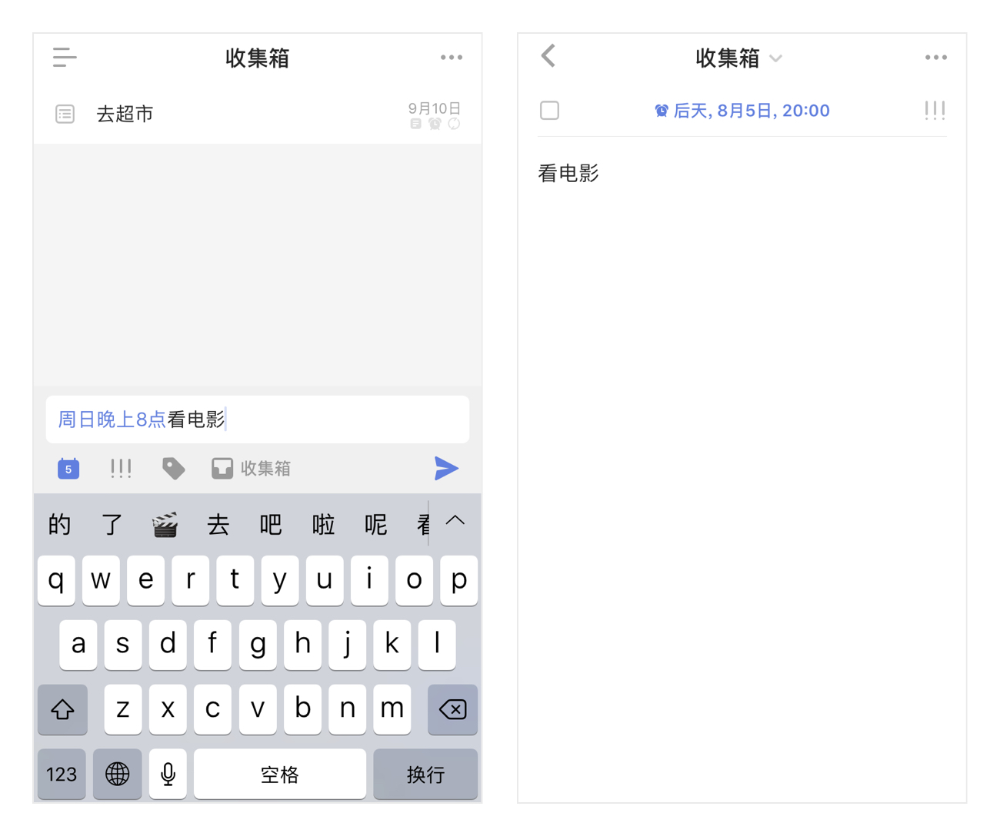

创建任务
iOS 端支持多种方式添加任务：
客户端创建任务
在清单列表点击“+”键，呼出快速添加条，输入任务内容，点击【飞机】图标即可创建任务。
通过下方的日历图标可以给任务设置到期日，还可以设置优先级和移动到其它清单。 注：在智能清单以及收集箱内创建任务时，任务会保存在收集箱中；如果在其它清单中创建，则会保存到对应的清单下。

进入任务详情页，可以进一步对任务进行设置：
设置日期：点击【设置日期】可以设置任务到期时间、任务提醒时间以及任务重复周期，高级会员可以设置时间段。
-在快速设置日期框中长按第二行的Icon可以对快捷日期进行配置。 -设置智能时间的时间，滴答会根据当前的时间显示其中最近的一个。例如：上午八点时你对任务进行添加或左滑，那么会显示出早上 9：00 这个智能时间。 -配置推迟时间：如果任务时间变更或者设置的时间已经过了但是没有完成，可以选择推迟任务的到期时间，根据实际情况自己配置推迟的时间。 -配置以后：根据实际情况自己配置“以后”的时间，是“下周一”还是“2”-“7”天后。
设置任务的优先级：点击日期栏右侧的优先级按钮设置任务的优先级。
- 转为列表任务：点击键盘上的切换图标，可以将文本任务转为列表任务。
关闭快速添加条
【快速添加】默认开启，可以通过【设置】-【高级选项】来关闭【快速添加】，在清单列表点击“+”键，直接进入任务详情页创建任务。
语音输入
长按“+”键可以进入语音输入状态，说话即可创建任务。
- 智能识别时间信息：当语句中带有“今天3点”“明天下午”这样的时间信息时，可以智能识别出来并为你创建带有这个时间的任务。
- 取消输入：如果不小心说错了，将手指上滑再松开，即可取消当前输入。
- 快速修改：提醒任创建务成功后，发现创建内容有误，可以点击编辑任务，即可进入任务编辑界面。如果在显示创建成功后2秒内无操作，视为识别无误。
自然语言识别
在【设置】-【高级选项】-【智能识别日期】中可以开启【文本输入识别】，开启后在快速添加栏输入任务时，日期和时间会高亮显示，自动为任务设定到期日和提醒时间。
不想在文本中显示日期和时间，可以在【设置】-【高级选项】-【智能识别日期】中开启【移除任务文本中的日期】即可。

文本/列表任务
支持文本任务和列表任务之间快速切换。
点击键盘左上角的切换图标，即可切换列表视图和文本视图。 注：列表模式下，换行即可创建了新子任务。
选择一条子任务，可以直接编辑，或者点击右边的删除图标，将其删除。
按住右边的拖动图标，待浮起后可以对子任务进行排序。 高级账户每个任务下不限子任务数（免费账户最多19个）。 注：高级账户可以给列表任务添加描述。
添加附件
可以将手机相册内的照片或拍照、录音作为附件加入到任务中。
点击任务进入任务详情界面 - 点击右上角「···」，可以选择3种附件类型上传：
- 照片：调用手机相册中的照片作为附件上传。
- 拍摄：会打开你的相机，拍照结束后点击「使用照片」，将照片上传成附件。
- 录音：会打开你的麦克风，请允许滴答清单访问你的麦克风。录音结束后就会上传成为你的附件。
附件上传成功后会自动同步到各个平台，每个附件的大小限制为10MB。 注：高级账户一天最多可上传99个附件，免费账户一天限制上传 1 个
微信创建任务
关注并绑定微信公众号，可以通过微信在滴答清单中创建任务
更多与微信公众号相关的内容请参考 微信公众号
Siri集成
开启 Siri 集成功能，提醒事项一键移入滴答清单，Siri 也能为滴答清单创建任务。
操作：【设置】-【高级选项】-【提醒事项与 Siri 】。
开启集成 Siri 之后，再用 Siri 创建的提醒事项会加入滴答清单。 点击下方的“导入已有任务”，可以把手机里已经存在提醒事项导入滴答清单。
iOS 11 可以使用Siri直接创建任务和清单到滴答清单应用，还可以将任务添加进指定清单中。
注：此功能为高级账户功能。

Widget
下拉通知栏，在【编辑】中添加滴答清单插件。
ios 8 和 ios 9 中可以显示今天和已过期的任务，以及任务数量；点击可以快速标记完成；点击【新建】跳转至新建任务界面，默认到期时间为今天。
ios 10 和 ios 11 中widget分为列表widget和日历widget。
列表widget点击【选择清单】跳转到【小部件清单】页面，可以选择显示在widget上的清单列表;在widget中点击【添加】按钮跳转至新建任务界面，默认到期时间根据选择的清单列表。
日历widget默认显示本周的任务，点击日期，显示任务列表;点击【添加】按钮跳转至新建任务界面，默认到期时间为日历widget上选中的时间。
注：显示在列表widget上的清单列表还可以在应用中通过【设置】- 【高级设置】 - 【小部件清单】进行设置。
邮件创建任务
你可以通过发送邮件到指定邮箱来创建任务，如果邮件标题中带有时间或者重复信息，会被智能识别并自动设置提醒。 可以发送邮件到 todo@mail.dida365.com（仅限于使用你的注册邮箱）或者专用的邮箱地址（适用任何邮箱）。 查看专用邮箱地址请登录网页版滴答清单：右上角头像—【设置】—【日历订阅＆邮件】服务。